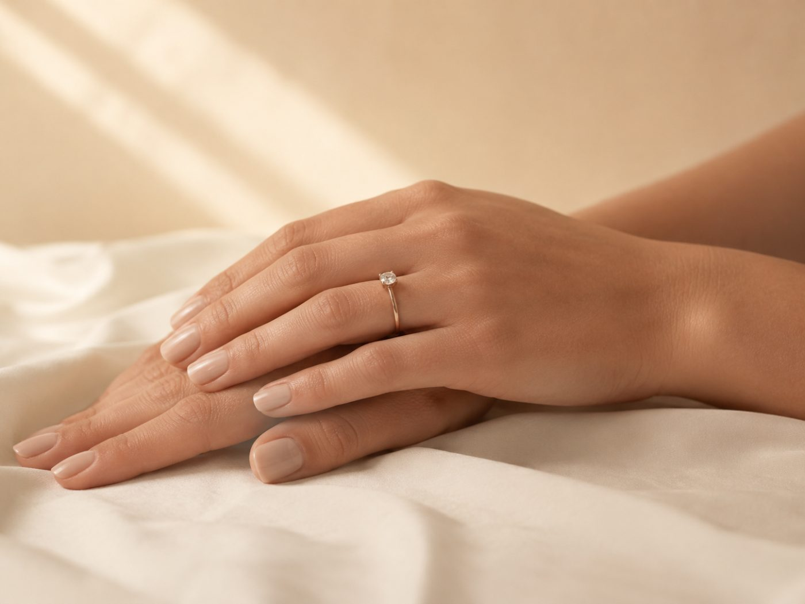

SMALL WEDDING
距離が、
近い。
少人数の式は、ゲストとの距離が数十センチになります。大人数の披露宴とは、見られる部分が変わります。

先に結論です。優先すべきは肌の質感、歯、手元です。体型のシルエットは遠目で効くもので、距離が近い式では相対的に優先度が下がります。
大人数の式との違い
| 項目 | 大人数 | 少人数 |
|---|---|---|
| ゲストとの距離 | 数メートル | 数十センチ |
| 見られるもの | 全身のシルエット | 肌の質感、歯、手元 |
| 写真 | 引きのカットが多い | 寄りのカットが増える |
| 体力 | 1日がかりで消耗 | 会話は多いが移動は少ない |
| 優先すること | 体型と姿勢 | 近くで見える部分 |
肌の質感が出る
数十センチの距離では、ファンデーションの粉っぽさや乾燥がそのまま見えます。厚く塗るほど目立つので、下地の状態を整えるほうが結果が良い。
やることは保湿と睡眠だけです。この2つで数週間あれば変わります。直前に新しいものを足すのは避けてください。


荒れてしまった場合は直前の肌荒れに。
歯が最も目につく
会話の時間が長く、そして距離が近い。大人数の披露宴より歯が見られます。1回から受けられる施術もあるので、時間がなくても間に合います。
回数と時期はホワイトニングは何回必要かに。
手元も見られる
指輪交換だけでなく、乾杯や食事の場面で手が近くにあります。手の甲の乾燥と爪の状態は、思ったより見られています。
- 手の甲の保湿。顔と同じくらい丁寧に。乾燥は写真でも出ます
- 爪は短めに整える。長さより形と清潔感
- 日焼けの跡。手の甲は焼けやすく、見落とされます
体型の優先度は下がる
シルエットが効くのは、離れて見たときと写真の引きのカットです。少人数婚では、そのどちらも相対的に少なくなります。
ただしドレスで出る部位は同じなので、背中と二の腕は無駄になりません。優先順位が下がるだけで、不要ではありません。
ドレス別の判断はシルエット別の準備に。
費用の配分が変わる
全身のエステコースより、歯と肌に集中させるほうが効率的です。浮いた分を写真やロケーションに回すという選択もあります。
配分の考え方は予算の考え方にまとめています。
次に読む
写真だけの場合はフォト婚だけの人がやること、残り期間からの逆算は3ヶ月プランに。